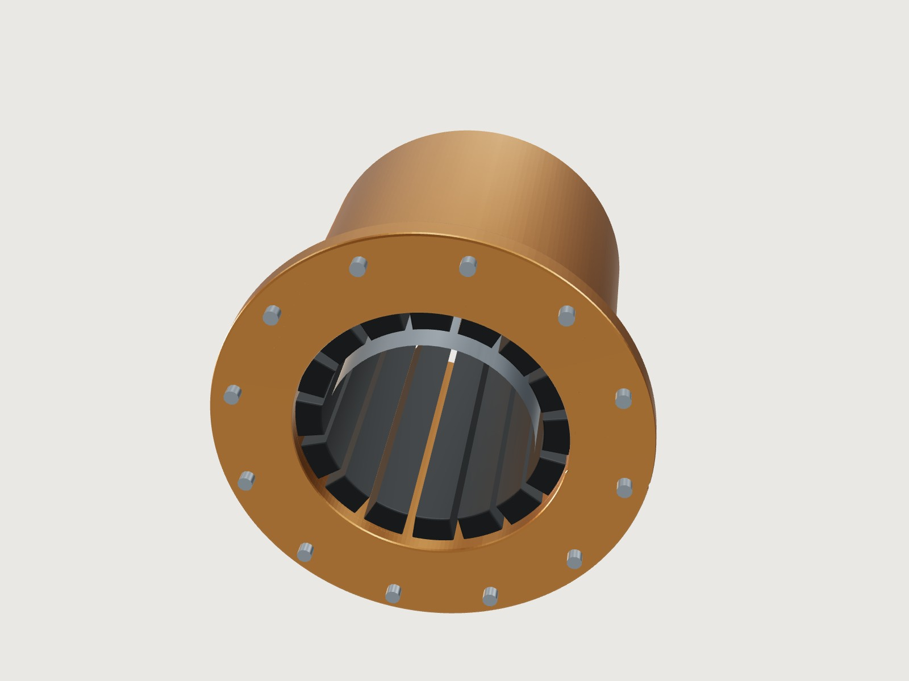

P-01 · Stave & partial arc
Propulsor bearings
Water-lubricated bearings manufactured in stave and partial arc systems for conventional and nuclear-powered submarines, naval surface vessels and other industrial equipment.
- Dual-hardness, low-friction nitrile rubber staves approved by the U.S. Navy
- Grooves between staves channel seawater through the bearing and carry away sand and abrasives
- Partial arc (round bore) bearings held to exacting tolerances
- Lubricant
- Seawater
- Systems
- Stave · Partial arc
- Platforms
- Submarines · Surface ships